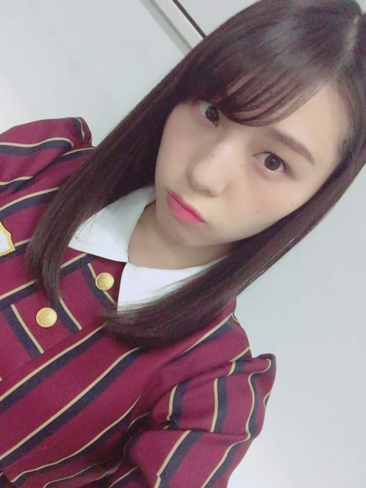
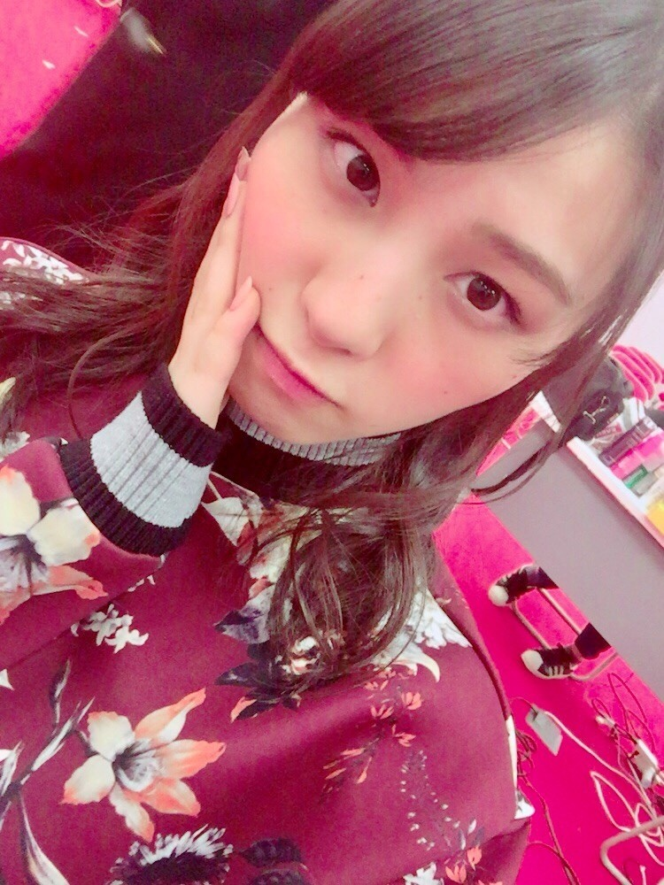
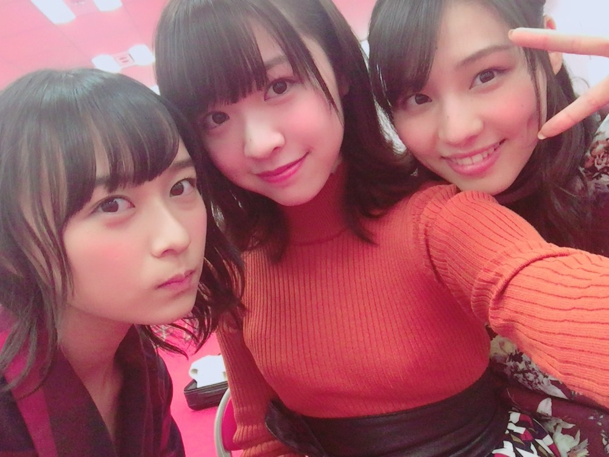
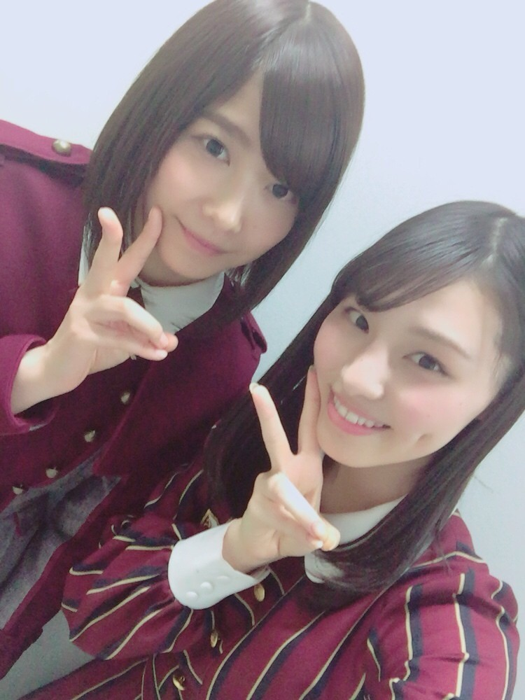

| 2016/12 28 Wed | あたらしいココロみ_(．．*)vol.149 |
みなさんこんばんはー！
相楽伊織です！

この前
｢ラジオ・チャリティ・ミュージックソン｣
新内眞衣のANN-Rに花奈さんと一緒に
出させて頂きましたー！
電話対応をした時も緊張したけど、
まいちゅんが電話対応している時に
私と花奈さんと2人で
放送してた時は特に緊張しました(><)
ラジオの生放送ってだけでも
緊張してたのに、
尚更緊張で、、(*_*)
でも19歳で初めて深夜のお仕事が出来たので
それも嬉しかったです♪♪

電話、募金をして下さった皆様
本当にありがとうございました！
~いおり庵~
 朝布団から上手く抜け出す方法を教えて下さい！
朝布団から上手く抜け出す方法を教えて下さい！
今は目覚ましで起きたら
割とさらっと出られるけど、
昔は3、2、1で
バッて布団全部剥がしてた！(^^)
ヘアスタイル変えるとしたら長さと色はどうする？
ベリーショートの金髪！
1回はやってみたい！
というか、メイクさんが今こんな感じの髪型で
すごい可愛いからいいなって思ったの！
いつも聴いてる音楽は？
毎日同じ曲聴くことはあまり無いけど
ほぼ洋楽聞いてます♪
P!nkとかKelly Clarksonとか
Avril LavigneとかOrianthiとか
女性アーティストが多いかも！
全部は書けないけど
男性アーティストももちろん聴きます(^-^)/
邦楽も聴いたりするけどね♪
イチオシは前も書いたけど
GLIM SPANKYさん！
最近のマイブームは？
メイクとかコスメかな？
前から好きだったけど
最近はネットとかお店に行って色々見てる♡
何歳までお年玉貰ってたー？
え！私はまだ貰う予定だよ。。
逆に世間は何歳くらいまで
貰ってるんだろう(´･ω･`)
香水は何を使ってますか？
グアムで買った
Ferragamoの
｢Signorina Misteriosa｣
を使ってるよ！
匂いが強めなので苦手な方が多いかも。
私は好き♡
もし飼えるとしたらどんな動物を飼いたいですか？
トラ！トラがいいな(´▽｀)
コーヒーをブラックで飲むのは好きですか？
いや、私は嫌いです(__)
~美容編~
朝晩のスキンケアは何使ってますか？
普通に化粧水と乳液だけ！
AQUALABELの青の｢しっとり｣
を使ってるよー(^-^)/
普段使ってるリップは？
Kiehl'sのマンゴー使ってるよ！
色はマキアージュのウォータリールージュのRD333
あと、YSLのヴォリュプテ ティントインオイルの3番
チークは何使ってる？
無印良品のチークカラー(3色タイプ)RKと
M･A･Cのパウダーブラッシュラブクラウドだよー！
気分で使い分けてます(^^)
と、最近の私はこんな感じです(｡･ω･｡)

29日に放送の
乃木坂工事中1時間SPで
欅坂と一緒に忘年会をしましたー(^-^)/

渡邉理佐ちゃん！顔がすごい好き！
日曜日では無いので
間違えないようにして下さい！
是非見てねーヽ(*^^*)ノ
また書きます♡
i o r i .

コメント(260)
2016/12/28 21:18